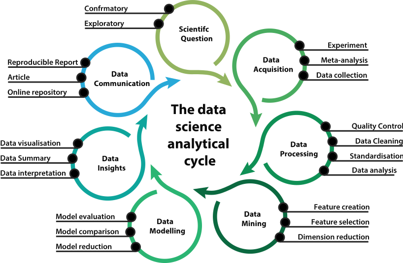

Feature Engineering and Feature Selection 101
Contents
Feature Engineering and Feature Selection 101¶
Feature engineering is the process of selecting, construction, or transforming raw data into features that form a quality dataset that can be used in supervised and unsupervised learning.
The art/science of translating data in the best way feasible involves an elegant combination of domain expertise, intuition, and mathematics. This section provides a quick overview to the most basic yet regularly used strategies for feature engineering.
ML workflow¶
A typical ML workflow/pipeline looks like this:

There can be many ways to divide the tasks that make up the ML workflow into phases. But generally the basic steps are similar as the graph above.
Data Exploration¶
What is a variable?¶
A variable is any differentiating factor, number, or amount that can be measured or quantified. They are termed “variables” because the value they accept can and generally does change.
Variables types¶
Variables come in different shapes and forms from very common and intuitive like age, sex or eye colour to complicated measures that require domain knowledge for example systolic blood pressure.
It is useful to cluster variables into four major types:
Numerical: e.g. binary, integers, float or complex
Categorical: e.g. nominal and ordinal
Datetime: i.e. any time related unit
Freetext: i.e. any observation containing unstructured textual data
What is a Feature?¶
A feature is just a sequence of variables that almost always share the same type.
The building blocks of datasets are features.
The features of a dataset that you use for machine learning greatly influence the quality of the insights you will be able to derive.
Moreover, different scientific challenges within a given discipline may not always require the same characteristics, which is why understanding the specific goals of any data science project is paramount.
What are Feature Characteristics?¶
Any scientific endeavour needs to be able to describe features using some summary measures
The most common characteristics regardless of type is missingness. Which is just the percentage of missing data in a specific feature.
Then each of the four types of data will have different means of describing them.
numeric Feature Characteristics¶
For example, numeric features will often be described using:
Statistical moments: e.g. mean, var, skewness and kurtosis
Magnitude, range and quantiles
Outliers: i.e. the existence of extreme value that is significantly different from the remaining data
Categorical Feature Characteristics¶
In contrast, categorical features will be described using:
Cardinality: i.e. The number of unique labels the feature contains
label frequency: i.e. the distribution of labels across a feature
Datetime Feature Characteristics¶
Datetime features will be described using:
Min, max date
Observation frequency
And can also apply more complex methods such as trend, stationarity etc.
free text Feature Characteristics¶
Finally, free text features can be described using:
Dictionary: i.e. the unique set of words that can be formed from the feature
Min and Max sentence length in words
If relevant we can also extract affective tendencies
Or even richness of vocabulary
Identify Feature type¶
Univariate Analysis¶
Descriptive statistics on one single variable.
Variable |
Method |
|---|---|
Categorical |
Shape: |
Numerical |
Central Tendency: |
Pandas¶
Categorical:
<pd.Series>.value_counts()Central Tendency:
<pd.Series>.agg(['mean','median','mode'])Dispersion:
<pd.Series>.agg(['min','max','ptp','quantile','scipy.stats.iqr','mad','var','std'])Shape:
<pd.Series>.agg(['skew','kurt'])
Plots¶
Categorical: Bar, line, area, swarm plots
Numerical: Density, histogram, Box, violin
Multi-variate Analysis¶
Descriptive statistics between two or more variables. Density approximation
Variable |
Method |
|---|---|
Categorical |
Shape: |
Numerical |
Central Tendency: |
Numpy and Pandas¶
Categorical:
np.histogramdd, pd.crosstabCentral Tendency:
<pd.DataFrame>.mean(axis=1)Dispersion:
<pd.DataFrame>.min(axis=1)Shape:
Morphology, distance and similarity
Plots¶
Categorical: Scatter, swarm Plot
Correlation Plot
Heat Maps
Radviz
Dataset Cleaning¶
Missing Values¶
Definition: For a certain observation there is some proportion of missing variables across features.
Certain algorithms cannot work when missing value are present
Even for algorithm that handle missing data, without treatment the model can lead to inaccurate conclusion
Missingness can be evidence of a bigger problem that the experiment is neglecting to deal with
Missing Mechanisms¶
It is important to identify the processes that underlays the reasons for missingness in the dataset.
We may opt to treat the missing information differently depending on the mechanism.
There Are three theoretical missingness concepts
Missing Completely at Random : no relationship between the data missing and any other values
Missing at Random : Depends on observed Predictors
Missing Not At Random : Depends on Unobserved Predictors
Missing Completely at Random¶
A variable is missing completely at random (MCAR) if the probability of being missing is the same for all the observations.
There is nothing systematic going on that makes some data more likely to be missing than other.
If values for observations are missing completely at random, then disregarding those cases would not bias the inferences made.
Missing at Random¶
Missing as Random (MAR) occurs when there is a systematic relationship between the propensity of missing values and the observed data.
In other words, the probability an observation being missing depends only on available information (other variables in the dataset), but not on the variable itself.
For example, if people from african ethnicity are less likely to allow their financial status to be captured on internet databases compared to european ones, ethnicity is associated with financial status.
And we will expect to see that the financial information will be missing at random more for africans than for europeans.
Missing Not At Random¶
Missingness depends on information that has not been recorded, and this information also predicts the missing values.
If the website used to acquire data only works well for high band internet there will be a bias for urban areas where the deployment of high band internet is more abundant
In this situation, data sample is biased if we drop those missing cases.
Testing for a Missing Mechanism¶
Using domain expertise.
In many situations we can assume the mechanism by probing into the logic behind a feature.
Using statistical test.
Use missingness as either a binary or continues variable and test it’s dependency on other features
If a dependence exists we can assume that the data is Missing at Random
In practice without the ability to conduct actual experiments on the missing mechanism it is very hard to be certain
Dealing with Missing Data¶
There are many ways to deal with missing data here is a list of the most common ones
Row wise Deletion
Remove observations with any missingness
This approach will preserve joint distribution if Missing Completely at Random (MCAR)
May yield biased estimates if Missing at Random or Missing Not At Random, because we are biased towards a specific group
Often data acquisition is expensive and discarding too much data is not realistic
Mean/Median/Mode Imputation
Replacing the NaN by mean/median and the NA by most frequent value
Effective for MCAR
However, this will distort the distributions and the joint distributions
Random Imputation
Replacing the NA/NaN by sampling at random from the available observations
Preserve distribution if MCAR
However, this introduces a hidden bias that is hard to control
Arbitrary Value Imputation
Replacing the NA/NaN with a single number that reflects it’s missingness
Distort distributions
Add missingness feature
Include a feature to indicate that the value was imputed
May capture missingness dependencies
Increases feature space complexity
Note: Some methods, like as XGboost, include missing data treatment into the model-building process, eliminating the requirement for this phase. However, it is critical that you understand how the algorithm treats them and convey this in your paper.
Outliers¶
An outlier is an observation that deviates so much from the other observations that it raises the possibility that it was created by a separate mechanism.
Outliers, depending on the context, either deserve special attention or should be completely ignored.
For example, an extreme response time on a cognitive task is usually a sign of task disengagement, while a weight of 700kg is very likely due to measurement error and should be filter out or impute with something else.
What can Outlier do?¶
The presence of outliers may:
Disrupt the functionality of most linear and distance dependent approaches
Introduce noises to dataset
Make samples less representative
Any algorithms that rely on means/variance are sensitive to outliers as those stats are greatly influenced by extreme values.
Outlier Detection¶
Outlier analysis and anomaly detection is a huge field of research.
As you would expect there is a is a comprehensive Python toolkit (PyOD) to detect and deal with outliers
The common statistical methods to detect outliers are:
Detect by arbitrary or domain boundary : just manual
Mean & Standard Deviation method : \(\mu \pm 3*sd\)
IQR method : \(iqr=q3-q1\), \(q1-iqr*1.5, q3+iqr*1.5\)
MAD method : \(mad = median(abs(x-q2))\), \(q2 \pm mad*2.5\)
However, beyond these methods, it’s more important to keep in mind that the study context should govern how you define and react to these outliers. The meanings of your findings should be dictated by the underlying context, rather than the number itself.
Handling Outliers¶
Mean/Median/Mode Imputation
replacing the outlier by mean/median/most frequent values of that feature
Discretization
Transform the continuous feature into discrete variables
Windsorization
Capping the maximum of a distribution at an arbitrarily set value, vice versa
Discard outliers
Drop all the observations that are outliers
To summarise¶
There are many strategies for dealing with outliers in data, and depending on the context and data set, any could be the right or the wrong way.
It’s important to investigate the nature of the outlier before deciding.
Rare Values¶
Categorical variable with labels with very low frequency.
In some situations rare values, like outliers, may contains valuable information of the dataset and therefore need particular attention.
For example, a hospital visit of a patient is rare but important.
Rare values in categorical variables tend to cause over-fitting, particularly in tree based methods.
A big number of infrequent labels adds noise, with little information, therefore causing over-fitting.
Rare labels may be present in training set, but not in test set, therefore causing over-fitting to the train set.
Rare labels may appear in the test set, and not in the train set. Thus, the model will not know how to evaluate it.
Handling Rare Value¶
Mode Imputation
Replacing the rare label by most frequent label
Grouping into one new category
Grouping the observations that show rare labels into a unique category
Depending on the situation, we may use different strategies:
High Cardinality¶
The number of labels within a categorical variable is known as cardinality.
A high number of labels within a variable is known as high cardinality.
Variables with too many labels tend to dominate over those with only a few labels, particularly in tree based algorithms.
A big number of labels within a variable may introduce noise with little if any information, therefore making the machine learning models prone to over-fit.
Some of the labels may only be present in the training data set, but not in the test set, therefore causing algorithms to over-fit the training set.
Contrarily, new labels may appear in the test set that were not present in the training set, therefore leaving algorithm unable to perform a calculation over the new observation.
Handling High Cardinality¶
Grouping labels with domain knowledge
Grouping labels with rare occurrence into other category
Grouping labels with some learning algorithm
Data Leakage¶
Data leakage occurs when information from sources other than the training dataset is utilised to build the model. As a result, you may end up developing overly optimistic models that are virtually worthless and cannot be utilised to make judgments.
The model performs well on both your training and testing data, however this is not because your model has strong generalizability, but because it relies on information from the training data.
While it is common knowledge to employ cross-validation or at least separate a validation set when training and testing models, it is easy to overlook doing so throughout the feature engineering and selection process.
Keep in mind that the training dataset should not be utilised to make model decisions, including feature engineering and selection.
What is a Feature engineering?¶
Feature engineering is the process of selecting, construction, or transforming raw data into features that form a quality dataset that can be used in supervised and unsupervised learning.
What is feature construction?¶
Feature construction is the process of developing new features apart from the ones generated in feature transformation, that are appropriate variables of the process under study.
Feature construction Methods¶
Domain expertise
Expansion
Encoding
What is feature transforming?¶
Feature transformation is the process of translating a set of values for a feature to a new set of values in order to make the data representation more acceptable or easier to handle for downstream analysis.
Feature transforming Methods¶
Scaling
Capping
Imputation
Discretisation
What is feature selection?¶
The process of extracting the most consistent, non-redundant, and relevant features for use in model creation is known as feature selection. As the number and variety of datasets expand, it is critical to reduce their size methodically. The primary purpose of feature selection is to increase predictive model performance while lowering modelling computational costs.
Feature Selection Methods¶
Feature selection algorithms are categorized as either supervised, which can be used for labeled data; or unsupervised, which can be used for unlabelled data.
Supervised techniques are :
Directional selection
Directional elimination
Random selection
Brute force
Unsupervised techniques are :
Filtering
Wrapping
Embedding
Hybrid